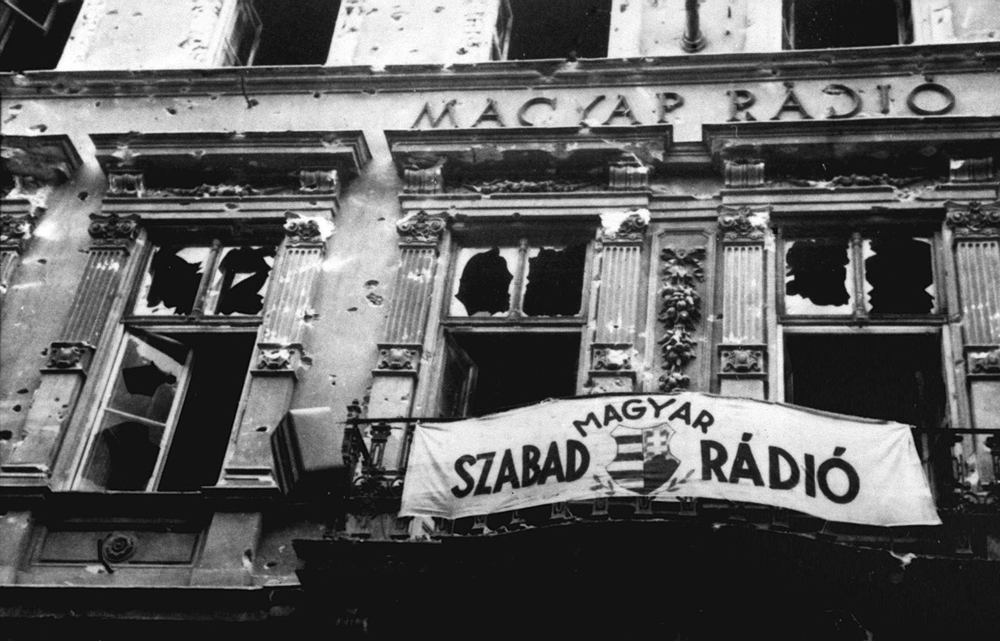

Albert Camus, francia író és filozófus
Magyarország a II. világháború után
Ideiglenes Nemzeti Kormány
1944 őszére a szovjet hadsereg elérte Magyarország területét, ami alapjaiban változtatta meg az ország politikai viszonyait.
A német megszállás, majd a nyilas uralom után a felszabadított területeken újraindult a politikai élet:
a Magyar Kommunista Párt mellett ismét működni kezdett a Szociáldemokrata Párt, a Nemzeti Parasztpárt, valamint a Független Kisgazdapárt is.
Debrecenben 1944 decemberében megalakult az Ideiglenes Nemzetgyűlés, illetve az Ideiglenes Nemzeti Kormány.
Magyarországot visszaállították az 1937-es határai közé, és az ország ügyeinek irányítását nagyrészt a Szovjetunió vette kézbe,
a Szövetséges Ellenőrző Bizottság (SZEB) felügyelete alatt, amelynek vezetője Vorosilov marsall lett.
A kormány gyakorlatilag minden szovjet utasítást végrehajtott. Elindult a háborús bűnösök felkutatása,
amit a Politikai Rendészeti Osztály irányított, és megkezdték a népbírósági eljárásokat is.
A 477 halálos ítéletből 189-et végre is hajtottak – többek között kivégezték a korábbi miniszterelnököket:
Szálasi Ferencet, Sztójay Dömét, Bárdossy Lászlót és Imrédy Bélát. Ezek az eljárások azonban már nemcsak a
tényleges háborús bűnösöket célozták, hanem a rendszer potenciális ellenfeleit is.
Köztársaság kikiáltása
1945 tavaszán megtörtént a földosztás, ami felszámolta a nagybirtokrendszert. Új választójogi törvény is született:
minden 20 év feletti magyar állampolgár szavazati jogot kapott, kivéve a fasiszta szervezetek korábbi vezetőit, illetve a
magyarországi németek jelentős részét. Az 1945-ös választásokon a Független Kisgazdapárt fölényesen, 57%-os eredménnyel győzött,
ám a szovjetek nyomására koalíciós kormány alakult, amelyből a kommunisták nem maradhattak ki. Tildy Zoltán lett a miniszterelnök,
Rákosi Mátyás és Szakasits Árpád államminiszterek.
1946 januárjában kikiáltották a köztársaságot, Tildy Zoltánt elnökké választották, Nagy Ferenc lett a kormányfő.
Ekkor a Kisgazdapárt próbálta kivizsgálni a földosztások során történt visszaéléseket, de a kommunisták ezt ellenséges
lépésként értelmezték, és tüntetésekkel reagáltak. Megindult az úgynevezett „szalámitaktika” – politikai ellenfelek lépésről
lépésre történő ellehetetlenítése. Társadalmi szervezeteket oszlattak fel,
politikusokat zárattak ki a Kisgazdapártból, majd később el is távolították őket a közéletből.
Párizsi békeszerződés
Közben az infláció is súlyos problémává vált, ezért 1946 augusztusában – főként belső forrásokra támaszkodva – bevezették a forintot.
Ebben szerepet játszott az is, hogy a nyugati hatalmak és az USA is támogatták a pénzügyi stabilizációt.
Ebben az évben kezdődött meg a magyarországi németek kitelepítése is: mintegy 250 000 embert telepítettek ki a kollektív bűnösség elve alapján.
Csehszlovákia is nyomást gyakorolt Magyarországra a lakosságcsere-egyezmény aláírása érdekében. Bár hivatalosan önkéntes volt az áttelepülés,
a gyakorlatban sok magyar kényszerhelyzetbe került. Csehszlovákiában a magyarokat gyakran jogfosztottá tették,
vagy asszimilációra, reszlovakizációra kényszerítették őket.
Az 1947. február 10-én aláírt párizsi békeszerződés értelmében Magyarország 300 millió dollár jóvátétel megfizetésére köteleztetett,
többségében a Szovjetunió, kisebb részben Jugoszlávia és Csehszlovákia javára.
A szovjet csapatok továbbra is Magyarországon maradtak, hivatalosan Ausztria megszállása miatt,
de ezzel biztosították a szovjet befolyás fenntartását az országban. Az Egyesült Államok által kezdeményezett Marshall-tervhez való csatlakozást is megtiltották.
Kommunisták teljhatalma
A szovjet nyomás egyre nyíltabb formát öltött: 1947. február 25-én Kovács Bélát, a Kisgazdapárt egyik vezető politikusát nyilvánosan elhurcolták.
Nagy Ferenc miniszterelnök emigrációba kényszerült, Kéthly Annát előbb kizárták a pártjából, majd börtönbe zárták.
Az augusztus 31-i választásokon a kommunisták nyílt csalást alkalmaztak – az úgynevezett „kékcédulás” szavazatokkal mesterségesen növelték eredményüket.
Bár formálisan koalíciós kormány alakult, a tényleges hatalom ettől kezdve teljesen az MKP kezébe került.
Rákosi-rendszer
Rendszer kiépítése, népköztársaság kikiálltása
Rákosi Mátyás, akit nem véletlenül neveztek „Sztálin legjobb tanítványának”, megkezdte Magyarországon a totális diktatúra kiépítését.
A gazdaság teljes állami ellenőrzés alá került: a bankokat és az üzemeket államosították. Rajk László, akkor még belügyminiszterként,
szinte minden civil szervezetet felszámolt. 1948-at a „fordulat évének” szokták nevezni, mert ekkor olvadt össze a kommunista és a szociáldemokrata párt,
létrehozva a Magyar Dolgozók Pártját. Innentől már nem volt kérdés, ki irányítja az országot. Az 1949-es választás eredménye „hivatalosan” 96% volt,
de választani gyakorlatilag nem lehetett, mivel csak egyetlen jelölt volt mindenhol. Aki nem ment el szavazni, azt akár büntetés is érhette.
1949-ben kikiáltották a Magyar Népköztársaságot. Az ország új alkotmányt kapott, amit a Szovjetunió mintájára írtak, és bevezették a tanácsrendszert az
önkormányzatok helyett. A politika teljesen a párt kezébe került.
Az egyházak elleni harc is egyre durvább lett. A legismertebb áldozat Mindszenty József bíboros,
akit koncepciós perben elítéltek, megkínoztak és börtönbe zártak.
Az egyházi iskolákat elvették, papokat hurcoltak el, sokan közülük vértanúhalált haltak – például Sándor István szalézi testvér.
Rákosi még a Regnum Marianum templomot is leromboltatta, hogy a helyére Sztálin szobrát állítsák.
ÁVH
Az ÁVH, vagyis az Államvédelmi Hatóság lett a rendszer rettegett eszköze. Rákosi kivette a belügyminisztérium fennhatósága alól,
és saját irányítása alá vonta. Az ÁVH – „a párt ökle” – gyakorlatilag azt vitt el, akit csak akart.
Az emberek rettegtek, különösen éjszakánként, amikor a fekete autók megjelentek a házak előtt.
Egy becsöngetés is elég volt ahhoz, hogy valakit elvigyenek – innen ered a „csengőfrász” kifejezés.
Aki szerencsésebb volt, egy veréssel megúszta, de sokakat internálótáborokba, például Kistarcsára vagy Recskre hurcoltak,
ahol embertelen körülmények uralkodtak. Az őrök utasítása egyértelmű volt: „Ne csak őrizd, gyűlöld!”
„vas és acél országa”
A rendszer idővel már nemcsak az úgynevezett „osztályidegeneket” üldözte, hanem a saját embereit is. Rajk Lászlót például,
aki korábban maga is a diktatúra kiépítői közé tartozott, 1949-ben kivégezték. 1951-ben még Kádár János is börtönbe került.
A gazdaságban sem történt más: a szovjet minta volt a követendő, még ha Magyarország adottságai nem is feleltek meg ennek.
Rákosi azt akarta, hogy Magyarország a „vas és acél országa” legyen, ennek érdekében hatalmas, sokszor felesleges beruházásokba kezdtek.
A tervek – előbb három-, majd ötéves ciklusokban – elérhetetlen célokat tűztek ki, az emberek életszínvonala romlott, a gazdaság pedig visszaesett.
A mezőgazdaságot is teljesen át akarták alakítani. 1949-től gyors ütemben kényszerítették be a parasztokat a termelőszövetkezetekbe.
Akik nem működtek együtt, azokat „kuláknak” bélyegezték, listára kerültek, földjeiket elvették, családjaikat kitelepítették.
Olyan növényeket is termeltek pártutasításra, mint a citrom, narancs, gyapot vagy gumipitypang – mindez teljesen éghajlatidegen volt.
A beszolgáltatási rendszer könyörtelen volt: a hatóságok szó szerint lesöpörték az emberek padlását. Disznót például csak engedéllyel lehetett levágni,
és a hús nagy részét be kellett szolgáltatni. Aki megszegte a szabályokat, az az ÁVH célpontjává válhatott.
Személyi kultusz
A diktatúra egészét áthatotta a személyi kultusz. Rákosi és Sztálin képei mindenhol jelen voltak, és aki nyilvánosan megszólalt róluk,
csak dicsérő szavakat mondhatott – ha nem akart bajba kerülni. Ünnepségeken, iskolákban, munkahelyeken fel kellett állni, ha a nevüket hallották,
dalokat és verseket írtak róluk, szobrokat állítottak nekik.
Nagy Imre megjelenése
1953-ban Sztálin halála új korszakot hozott a Szovjetunióban, és ennek hatása Magyarországon is érződött.
Moszkva utasította Rákosit, hogy ossza meg hatalmát.
Így lett Nagy Imre a miniszterelnök, míg Rákosi megtarthatta az első titkári pozíciót.
Nagy Imre enyhíteni próbált a rendszer szorításán: korlátozta az ÁVH működését, bezáratta a recski tábort, leállította a téeszesítést,
és sok koncepciós per elítéltjét szabadon engedte. Amikor viszont 1955-ben nem írta alá a Varsói Szerződéshez való csatlakozást,
a szovjet vezetés és a hazai keményvonalasok újra ellene fordultak. Leváltották, és Rákosi emberei ismét visszavették az irányítást.
Életmód Magyarországon az 1950-es években
Államosítás, mezőgazdaság kollektivizálása
Az államosításokkal és a mezőgazdaság kollektivizálásával a kommunista vezetés célja az volt, hogy megszüntesse a vagyoni különbségeket.
Ennek következtében a korábban vagyonos rétegeket a szegényebb társadalmi csoportok szintjére süllyesztették.
A kommunista ideológia szerint nem létezhetett munkanélküliség, ezért mindenkinek biztosítani kellett valamilyen munkát,
még akkor is, ha az illető nem rendelkezett megfelelő végzettséggel. A béreket tudatosan alacsonyan tartották,
az eltérő társadalmi rétegek jövedelmei között pedig szinte semmilyen különbség nem maradt.
Az értelmiségre továbbra is szükség volt, de a rendszer azokat, akiket reakciós szemléletűnek tartott, eltávolította – sokukat például a Hortobágyra internálták.
A maradók munkáját politikailag megbízhatónak ítélt káderek felügyelték. Ezek a káderek jellemzően alacsonyan képzett, munkás- vagy paraszti származású, párthű
személyek voltak, akik lojalitásuk révén kerültek vezető pozíciókba.
Ratkó-korszak
A női egyenjogúság kérdését a kommunista vezetés kiemelt fontosságúnak tekintette.
A propaganda különösen hangsúlyozta a dolgozó nő szerepét, és számos, korábban kizárólag férfiak által végzett munkakör is megnyílt előttük.
Az viszont kevés figyelmet kapott, hogy a fizikai munkát végző nők közül sokan súlyos egészségkárosodást szenvedtek. A kétkeresős családmodell
ugyan javította az anyagi helyzetet, de a nők számára ez fokozott terhelést jelentett: a munkavégzés mellett a háztartás és a gyermeknevelés is rájuk hárult.
A családpolitikát az ideológia irányította: az abortuszt éveken át tiltották, emellett bevezették a gyermektelenségi adót is. Ezek az intézkedések Ratkó Anna népjóléti miniszter nevéhez kötődnek, innen ered az „Ratkó-gyerekek” elnevezés az ötvenes évek elején született generációra.
Lakhatási problémák
A lakhatási viszonyok súlyos problémát jelentettek. 1955-ben átlagosan 2,64 ember jutott egy szobára. Bár sok lakást elvettek a korábbi tulajdonosoktól,
a mezőgazdaságban bekövetkezett átalakulások miatt rengetegen költöztek a városokba, főként ipari központokba, mint Budapest vagy Sztálinváros.
Az állami lakásépítés nem tudott lépést tartani ezzel a növekedéssel, ezért általánossá vált a társbérlet és az ágyrajárás.
A párt jelenléte az élet minden területén
Az oktatási rendszer átalakítása is fontos eszköze volt a társadalmi átalakításnak. Az iskolák állami irányítás alá kerültek,
az általános iskolai oktatás 8 évfolyamos, a középiskolai 4 évfolyamos lett. Növelték a paraszti és munkásszármazású fiatalok beiskolázási arányát,
és elterjedtté váltak az esti tagozatos képzések is. A tananyagban központi szerepet kapott a marxista–leninista ideológia,
különösen a társadalomtudományokban, ahol az osztályharc vált irányadó szemléletté. Az orosz nyelv tanulása kötelező lett.
A politikai rendszer minden területen jelen volt a mindennapokban. A fiatalokat az úttörőmozgalom és a
DISZ (Dolgozó Ifjúság Szövetsége) szervezetei révén vonták be, ezek programjai kötelezőek voltak. A tömegsportot az MHK (Munkára, harcra kész!) mozgalom szervezte.
A propagandában a sportolók és színészek segítségével próbálták népszerűsíteni a rendszer programjait.
A Szabad Nép-félórák keretében a munkahelyeken politikai tartalmú beszélgetéseket tartottak, amelyek a pártlap cikkeire épültek.
A rádió is a propaganda eszközévé vált, és az ötvenes évekre már a falvakba is eljutott.
A hagyományos keresztény ünnepeket háttérbe szorították: a karácsony például „fenyőünneppé” alakult át. Augusztus 20-án már nem Szent Istvánra emlékeztek,
hanem az új, kommunista alkotmány elfogadását ünnepelték. Az egyházi rendezvényeket, például a Szent Jobb körmenetet is betiltották.
1951-ben megalakult az Állami Egyházügyi Hivatal, amely az egyházak működésének ellenőrzését látta el.
Március 15-e szerepe is megváltozott: az április 4-i „felszabadulás napjának” előkészítő eseményévé vált.
A párt szinte teljes kontrollt gyakorolt a társadalom fölött. Az ÁVH megfigyelőhálózata kiterjedt volt,
több mint egymillió emberről vezettek aktát. A korszakot a félelem légköre hatotta át, mivel bárkit bármikor letartóztathattak.
A sportot gyakran a társadalmi feszültségek levezetésére használták fel.
A labdarúgás és a vízilabda volt a két legnépszerűbb csapatsport, sikereiket – például az Aranycsapat eredményeit
vagy az 1952-es helsinki olimpiai győzelmeket – a rendszer a szocializmus diadalaként állította be.

Az 1956-os forradalom és szabadságharc
Lengyelországi munkásfelkelés és politikai változások
1956. június 28-án Lengyelországban, Poznańban munkásfelkelés tört ki, amelynek középpontjában a
munkásosztály élet- és munkakörülményeinek javítása, valamint szabad választások
követelése állt. Mintegy százezer munkás vonult az utcákra, és mikor megpróbálták elfoglalni az
államvédelmi hivatal épületét, a hatalom tüzet nyitott a tömegre.
A tüntetéseket az állami erők és a hadsereg fegyverrel verték le, ami több mint hetven
halálos áldozatot és több mint ezer sebesültet eredményezett.
A rendőrök és katonák több mint ötszáz embert letartóztattak. Ez a nap indította el a
lengyelországi 1956-os tüntetések sorozatát.
Augusztus 5-én a Lengyel Egyesült Munkáspárt (LEMP)
sztálinista vezetése megingott, és leváltották a
hatalmon lévő vezetőket. Władysław Gomułka, akit korábban eltávolítottak,
visszatért, és demokratikus reformokat ígért, amelyek a diktatúra enyhítésére irányultak,
hasonlóan a Magyarországon zajló átalakulásokhoz. A szovjet vezetés nem támogatta ezeket a
változtatásokat, és fegyveres beavatkozással fenyegette Lengyelországot.

Szovjet beavatkozás
Október 19-én, Lengyelországban a Gomułka-féle reformista szárny szándékai szerint alapvető
személyi változásokat hajtottak volna végre a párton belül. A szovjet csapatokat
harckészültségbe helyezték, és Moszkva nyomására a személycseréket végül végrehajtották.
Tüntetés a Műegyetemen
Október 22-én, a Műegyetem hallgatói 15 órára gyűlést hívtak össze, ahol a diákság
elégedetlenségét fejezték ki az oktatáspolitikával szemben. A gyűlésen több ezer fővel
csatlakoztak a Magyar Egyetemisták és Főiskolások Szövetségéhez, és a szovjet csapatok kivonását,
valamint a magyar-szovjet kapcsolatok felülvizsgálatát követelték.
A hallgatók egy délutáni tüntetés megszervezésére döntöttek, amely a
forradalom kiindulópontjává vált.

1956. október 23. - A forradalom kezdete
A Műegyetemen nem folyt normális oktatás. A hallgatók délután elindították a tüntetést,
amelyhez egyre többen csatlakoztak. A Petőfi-szobornál találkoztak, ahol Sinkovits Imre
színművész elmondta a Nemzeti Dalt. Ezután a tömeg a Bem térre vonult, és a lengyel nép
iránti szolidaritás kinyilvánítására, valamint a magyar szabadság
követelésére emelték fel szavukat. A tüntetők a szovjet típusú
címer kivágásával a nemzeti lobogó lyukas változatát emelték ki, ami a
forradalom szimbólumává vált. Az Országház előtt és a Magyar Rádió előtt
folytatódtak a demonstrációk, ahol a tüntetők a 16 pontot követelték, és kifejezték
függetlenségi igényeiket. Ekkor este 8-kor Gerő Ernő pártfőtitkár rádióbeszédében
csőcseléknek nevezte a demonstrálókat, amivel tovább gerjesztette a feszültséget.

Állami válaszok és harcok
Október 24-én, A Magyar Dolgozók Pártja rendkívüli ülést tartott, és a párt Politikai
Bizottsága újraválasztotta vezetőit. Ezen a napon gyülekezési tilalmat rendeltek el,
és statáriumot léptettek életbe. A felkelőkkel szemben a harci készültség fokozódott,
és a rendőrség fegyveres fellépést rendelt el. A főváros különböző részein,
mint a Corvin köz és Csepel, felkelő csoportok alakultak, akik sikeres akciókat hajtottak végre.

Vérengzés és szovjet beavatkozás
Október 25-én reggel a rádió bejelentette, hogy az „ellenforradalom” leverésére
tett intézkedések sikeresnek bizonyultak, de a harcok tovább folytatódtak, különösen a
parlament előtti tüntetéseken. Az MDP vezetése a szovjet miniszterelnök-helyettessel
folytatott tárgyalásokat követően megváltoztatta álláspontját, és Kádár Jánost választotta
pártelnöknek. A harcok átterjedtek az egész országra, és több tucat ember vesztette életét
ezen a napon.
1956. október 26. – Az első fegyveres összecsapások és a kormányi intézkedések
Ez a nap egy újabb rádióközleménnyel kezdődött: reggel fél 5-kor a Minisztertanács arra kérte a
budapesti lakosságot, hogy ne hagyják el otthonaikat. A Magyar Néphadsereg vezérkari
főnöke pedig az alábbi üzenetet küldte a katonai alakulatoknak: „A csapatok és raktárak a
laktanya területén jól látható helyekre tűzzék ki a nemzeti színű zászlót, címer nélkül.
A rádiókat helyezzék el az ablakokba. Ha a laktanyát támadás éri, értesítsék a tömeget,
hogy távozzanak, és csak akkor használjanak fegyvert,
ha a támadók fegyverrel próbálnak behatolni.”
A Néphadsereg már nem volt egységes, és sok alakulat átállt,
vagy csak nézte a laktanyák lefegyverzését.

A kormány újabb lépései és a fegyveres csoportok megsemmisítése
Október 27-én délután negyed 5-kor az MDP Központi Vezetősége nyilatkozott,
miszerint tárgyalásokat kezdenek Moszkvával a két ország közötti viszony
rendezése érdekében, és a szovjet csapatok kivonásáról is szó esett.
A nyilatkozat emellett amnesztiát hirdetett minden fegyveres harcos számára,
amennyiben este 10-ig leteszik fegyvereiket. Eközben országszerte sortüzekkel
próbálták leverni a forradalmárokat,
többek között Mosonmagyaróváron, Kecskeméten és Nagykanizsán.
Tárgyalások és a szovjet csapatok kivonásának első lépései
Október 28-án, reggel 6-kor a katonai parancsnokság rádióközleményben tájékoztatta a
közvéleményt, hogy a felkelők és a hadsereg között tárgyalások kezdődtek.
A Kossuth Rádió 13 óra 20 perckor bejelentette, hogy a Magyar Népköztársaság kormánya azonnali,
általános tűzszünetet rendel el a további vérontás elkerülése érdekében.
17 óra 25 perckor Nagy Imre a nemzeti demokratikus mozgalomként értékelte az eseményeket,
miközben a szovjet vezetés távozó vezetőit, Gerő Ernőt, Hegedűs Andrást,
Bata Istvánt és Piros Lászlót a Szovjetunióba szállították.
A párt Központi Vezetősége megszűnt, helyette egy új, Kádár János vezetésével működő
elnökség alakult.
A szovjet csapatok kivonása és a nemzeti rendőrség megalakítása
Október 29-én, A szovjet csapatok megkezdték Budapest elhagyását,
bár a Kilián laktanya környékén még folytak összecsapások. Münnich Ferenc bejelentette az
ÁVH feloszlatását és új demokratikus rendőrség alapítását.
A szovjetekkel való együttműködés érdekében több ÁVH-s tiszt menedéket kért
a szovjet hadseregtől, többek között 3200 ÁVH-s Budaörsnél gyűlt össze.
Moszkva állásfoglalása és a felkelők újabb győzelmei
Október 30-án, Moszkva bejelentette, hogy kész megvizsgálni a magyarországi szovjet
haderő helyzetét. A szovjet vezetés úgy vélekedett, hogy a magyar dolgozók felkeléséhez
ellenforradalmi és reakciós kapitalisták is csatlakoztak. Emellett jelezték, hogy hajlandóak
kivonni a Budapestre vezényelt alakulatokat.

1956. október 31. – A szovjet csapatok kivonása és a védelmi parancsnokság létrehozása
A szovjet csapatok további kivonulása folytatódott, és a magyar kormány egy újabb,
egységes védelmi parancsnokságot hozott létre, amelybe a nemzetőröket is bevonták.
A kormány külföldi segítségért folyamodott a Szovjetunióval szembeni semlegesség érdekében.
A Kossuth Rádió bejelentette, hogy tárgyalások folynak a szovjet csapatok kivonásáról.
A Szovjet Hadsereg Megérkezése és A Kormány Tárgyalásai
November 1-én, a szovjet csapatok lezárták a magyar repülőtereket, és elrendelték a
magyar honvédség számára, hogy ne tanúsítson ellenállást. A Jugoszláv hadsereg teljes
harckészültségbe került, és megkezdődött annak felvonultatása a magyar határ mentén.
A délelőtti órákban Losonczy Géza államminiszter bejelentette, hogy Nagy Imre miniszterelnök,
aki ezen a napon vette át a külügyminiszteri posztot, kormányának tagjaival
(Kádár János, Erdei Ferenc, Losonczy Géza, Tildy Zoltán és Dobi István)
tárgyalt Jurij Andropovval, a Szovjetunió budapesti nagykövetével.
Kifejezték követelésüket a Magyarországra érkezett újabb
szovjet csapatok azonnali kivonásáról. Nagy Imre kijelentette, hogy
Magyarország kilép a Varsói Szerződésből, és semleges országként kíván működni.
Ehhez az ENSZ-hez és más nagyhatalmakhoz fordulna segítségért.
Kádár János bejelentette az MSZMP megalakulását, és hogy az előzőleg működő
Magyar Dolgozók Pártja megszűnt. Ezen a napon Kádár János és Münnich Ferenc
titokban elhagyták Budapestet, és a Szovjetunióba távoztak.
A kommunista diktatúra idején elnyomott civilek és értelmiségiek aktivizálódtak,
és több új szervezet is alakult, mint például a
Politikai Foglyok Országos Szövetsége (POFOSZ), a
Keresztény Magyar Párt, a Keresztény Front,
valamint újjáalakult a Magyar Cserkészszövetség.
Mindszenty József bíboros rádióbeszédében a szabadságharcot méltatta.
1956. november 2. – A Kormány Változásai és A Varsói Szerződés Felmondása
A harcok nagyjából véget értek az egész ország területén. A koalíciós Nagy-kormány újraalakult,
és Maléter Pál lett a honvédelmi miniszter. A kormányfő kijelölte a delegáció tagjait,
akik a Varsói Szerződésből való kilépésről tárgyalnak (Losonczy Géza államminiszter,
id. Antall József, Farkas Ferenc, Kővágó József és Márton András).
A rádió közölte, hogy október 31-én és november 1-jén újabb szovjet egységek lépték át a
magyar határt, és hogy a magyar kormány minden tőle telhető erőfeszítést
megtett a csapatok visszarendelésére, de azok előrenyomultak,
és Budapest környékén is megjelentek. A kormány ennek következtében
felmondta a Varsói Szerződést.
Elkezdődött a hadsereg békeállománnyal való feltöltése, több
helyen behívóparancsokat adtak ki. Szekszárdon, Hódmezővásárhelyen és
más városokban több száz, illetve több ezer behívóparancsot kézbesítettek.
A szovjet csapatkivonásról tárgyaló delegáció megalakult, és Janza Károly
honvédelmi miniszter vezetésével dolgoztak. Andropov, a szovjet nagykövet
közölte, hogy a tárgyalásokon a Szovjetuniót Mihail Malinyin tábornok képviseli.
Késő délután Nagy Imre és környezete tudomásul vették,
hogy Kádár János és Münnich Ferenc eltűntek, valamint Apró Antal,
Kiss Károly, Marosán György és Nógrádi Sándor is elhagyták Budapestet,
és a szovjet bázisra, Tökölre távoztak.
Hruscsov és Malenkov Bukarestben román, csehszlovák és bolgár vezetőkkel
tárgyaltak, készülve a szovjet fegyveres beavatkozásra.
A jugoszláv vezetők nem ellenálltak a beavatkozásnak, és
végül Kádár János lett a szovjetek választása az új vezető személyére,
miközben Münnich Ferencet is javasolták, de a jugoszlávok Kádár mellett döntöttek.
Kormányátalakítás és Tárgyalások a Szovjetekkel
November 3-án újabb kormányátalakítás történt, és a következő személyek
lettek a kabinet tagjai: Nagy Imre miniszterelnök és külügyminiszter,
Tildy Zoltán, Kovács Béla, B. Szabó István (Független Kisgazdapárt), Bibó István,
Farkas Ferenc (Petőfi Párt), Kádár János, Losonczy Géza (MSZMP),
Fischer József, Kelemen Gyula, Kéthly Anna (Szociáldemokrata Párt) államminiszterek,
és Maléter Pál honvédelmi miniszter. Kádár János távolléte ellenére is a kabinet tagja maradt.
A délelőtt folyamán megkezdődtek a magyar-szovjet katonai
tárgyalások a csapatkivonások részleteiről, valamint a hősi emlékművek megóvásáról
és az ünnepélyes búcsúztatásról. A szovjet delegáció megígérte,
hogy több csapatszállító nem érkezik már Magyarország területére, és megbeszélték,
hogy este folytatják a tárgyalásokat.
Tildy Zoltán miniszter és Losonczy Géza sajtótájékoztatón nyilatkoztak arról,
hogy Magyarország a teljes egyenjogúság és függetlenség alapján kíván nyílt,
becsületes viszonyt kialakítani a Szovjetunióval.
Eközben Kádár János a Szovjetunió segítségét kérte az „ellenforradalom” leverésére,
és a Forradalmi Munkás-Paraszt Kormány megalakításával ellenkormányt alakított.
Münnich Ferenc kapta a fegyveres erők irányításáért felelős miniszteri tárcát.
Mindszenty József bíboros rádióbeszédében a magyar szabadságharcot méltatta,
és kiemelte a függetlenség fontosságát.
A szovjet csapatok lezárták a magyar-osztrák határt és a Ferihegyi repülőteret.
A szovjet csapatkivonási tárgyalások második fordulóján a tárgyaló küldöttséget,
amelynek tagjai Erdei Ferenc, Maléter Pál, Kovács István vezérőrnagy
és Szűcs Miklós ezredes voltak, Tökölön letartóztatták.
1956. november 4. – A Szovjet Beavatkozás és A Forradalom Leverése
Éjfélkor Vaszilij Kazakov vette át a szovjet csapatok főparancsnokságát Magyarországon.
Dalibor Szoldatics jugoszláv nagykövet Tito és Alekszandar Rankovics
belügyminiszter üzenetét közvetítette Nagy Imrének, melyben biztosították
a magyar kormányfőt, hogy Jugoszlávia menedéket ad számára.
Hajnali 4 órakor megkezdődött a „Forgószél” hadművelet, amelynek
célja a forradalom szovjet általi leverése és a Magyar Néphadsereg lefegyverzése volt.
Román határon keresztül újabb szovjet csapatok érkeztek Magyarországra.
5 órakor a szolnoki rádió közleményben tudatta, hogy a Kádár János
vezette Munkás-Paraszt Kormány szovjet katonai segítséggel megkezdte
az „ellenforradalom” leverését.
Nagy Imre rádióban szólt az ország népéhez és a
világ közvéleményéhez: „Ma hajnalban a szovjet csapatok
támadást indítottak fővárosunk ellen…” – közölte, hogy a magyar kormány a helyén maradt.
1956. november 5. – A Kádár-Kormány Stabilizálódása és a Támadások Kezdete
A szovjet csapatok megkezdik Budapest körüli előnyomulást, miközben Kádár János és
Münnich Ferenc visszatértek a fővárosba, hogy megszervezzék a szovjetekkel való együttműködést.
Kádár bejelentette a Magyar Forradalmi Munkás-Paraszt Kormány megalakulását,
és a kommunisták számára fontos hatalmat biztosító változások indultak el.
Az emberek egyre inkább a szovjet invázióval és a kormány tisztségviselőinek eltűnésével
szembesültek. A szovjet csapatok a fővárost körbezárták, és már ekkor elkezdődtek
az utcai harcok a felkelők és a szovjet csapatok között.
1956. november 6. – A Felkelők Elleni Küzdelem és A Tárgyalások Folytatása
A szovjet hadsereg továbbra is intenzíven támadta Budapestet, és megindultak a harcok a
város kulcsfontosságú területein. A kormány támogatói, mint Kádár János és Münnich Ferenc,
szorosabbra fűzték kapcsolataikat a szovjet vezetőkkel, és tárgyalásokat folytattak a katonai
segítségnyújtásról.
A felkelők Budapest több pontján még mindig harcoltak a szovjetek ellen, miközben
a szovjet csapatok újabb erősítéseket küldtek az országba. A magyar kormány megpróbálta
folytatni a szovjetekkel a tárgyalásokat, hogy biztosítsák a kormány stabilitását, és
elérjék a csapatok kivonását.
1956. november 7. – A Kádár-Kormány Konszolidálása és A Szovjet Támadások Intenzívebbé Válása
A nap folyamán Kádár János és a szovjetek közötti együttműködés egyre inkább egyértelművé vált,
hiszen a szovjet csapatok irányítása alatt a főváros védelme egyre inkább Kádárhoz
és a szovjetekhez hű magyar politikai vezetők kezébe került.
A szovjet csapatok folytatták Budapest ostromát, miközben a magyar
felkelők hatalmas kitartásról tettek tanúbizonyságot.
A nemzetközi közvélemény figyelme is egyre inkább Magyarországra összpontosult.
Ezen a napon már nyilvánvalóvá vált, hogy a forradalom leverését követően a
szovjetek és Kádár János kormányának hatalma konszolidálódni látszik, bár a
magyar ellenállás nem hagyta teljesen abba a harcot.
1956. november 8. – A Felkelés Folytatása és a Tárgyalások
A szovjet csapatok továbbra is próbálták teljesen elnyomni a fővárosi felkelést,
de Budapest egyes részein még mindig komoly ellenállás volt tapasztalható.
A Kádár-kormány igyekezett biztosítani a szovjetek támogatását,
miközben a szovjet vezetők is egyre keményebben szólították fel a
magyar kormányt a forradalmárok elleni intézkedések megszigorítására.
A tárgyalások a szovjet és magyar fél között folytatódtak, de a felkelés
végleg elveszítette lendületét a folyamatos szovjet
támadások és a magyar kormány támogatásával.
A szovjetek több ezer katonát vezényeltek Budapestre, hogy véget vessenek a felkelésnek.
1956. november 9. – Az Utolsó Ellenállás és a Kádár-Kormány Erősödése
A szovjetek és Kádár János irányítása alatt álló kormány fokozatosan elérte célját:
Budapest nagy része és az ország többi területe is szovjet ellenőrzés alá került.
A felkelők és a civilszervezetek egy része próbálta folytatni az ellenállást,
de a szovjet katonai túlerővel szemben egyre kevesebb esélyük volt.
A kormány számára mindeközben egyre fontosabbá vált, hogy nemcsak a katonai,
hanem a politikai stabilitást is biztosítsák, és hogy elérjék a nemzetközi
közösség elismerését. Kádár János a szovjetekkel szorosabban együttműködve
próbált egy olyan politikai rendszert kialakítani, amely megfelelt a Szovjetunió elvárásainak.
1956. november 10. – A Felkelés Kikapcsolódása
A budapesti harcok lassan lecsengtek, de a szovjet erők továbbra is
keresztül-kasul osztották meg a várost. A kormányzati vezetés számára a
stabilizálódás és a rend helyreállítása kiemelt cél volt, amit
folyamatos tárgyalásokkal próbáltak biztosítani a szovjetekkel.
Kádár János és a szovjetek közötti együttműködés szorosabbra fűződött,
miközben a magyar felkelők részéről egyre kevesebb lehetőség nyílt a szovjetek elleni harcra.
A szovjetek folytatták a rend helyreállítását, és
Kádár János személye, mint a forradalom leverésének
egyik kulcsszereplője, egyre fontosabbá vált a szovjet támogatás megszerzésében.
1956. november 11. – A Végső Küzdelem
A szovjet csapatok Budapest központjában és a főbb városokban
végleg megszilárdították a hatalmukat, és a felkelők többsége vagy
elmenekült, vagy letartóztatták őket. A forradalom végül elbukott,
és Kádár János kormánya átvehette a teljes hatalmat az országban.
A nemzetközi közvélemény figyelme a magyar eseményekre összpontosított,
de a szovjetek gyorsan reagáltak, és biztosították Kádár János hatalmát,
aki végleg elnyerte a szovjetek bizalmát. A Magyar Szocialista Munkáspárt
(MSZMP) megerősödött, és a Kádár-rendszer hosszú éveken át meghatározó
politikai erővé vált Magyarországon.
1956. november 12. – A Forradalom Véget Ér és Kádár Stabilizálja Hatalmát
A forradalom után Magyarországon végleg lezárultak az utcai harcok, és a
szovjet csapatok teljesen elnyomták az ellenállást. Kádár János kormánya
szoros együttműködésben folytatta a szovjetekkel a
politikai és gazdasági stabilitás biztosítását.
A Kádár-kormány megerősödött, és a kommunista párt
végleg dominálta a politikai életet. A szovjetek biztosították,
hogy a kormány teljes mértékben kontrollálja az országot, miközben a
magyar társadalom számára új, de kemény politikai környezet alakult ki.

1956. november 13. – A Szovjet Beavatkozás Hatása és a Kádár-Kormány Fennmaradása
A forradalom leverését követően a magyar társadalom sokkolva tapasztalta,
hogy az ellenállás nem tudott tartós változásokat hozni. A Kádár-kormány
stabilizálódott, és a szovjet beavatkozás következményeként Magyarország egy új,
szovjetellenőrzésű korszakba lépett. A politikai és gazdasági reformok, amelyeket
Kádár és a szovjetek vezettek be, a következő évtizedekben alakították Magyarországot.
A Kádár-rendszer több évtizedes uralmát alapozta meg, miközben Magyarország a
szovjet blokk részeként folytatta működését.